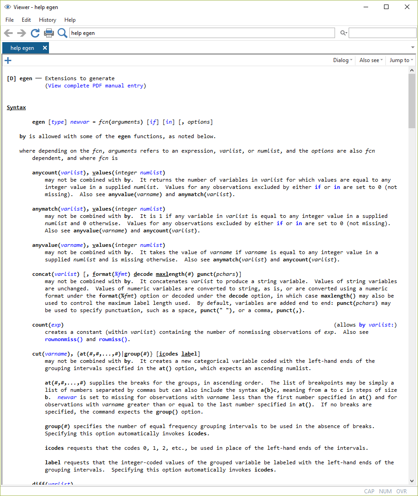
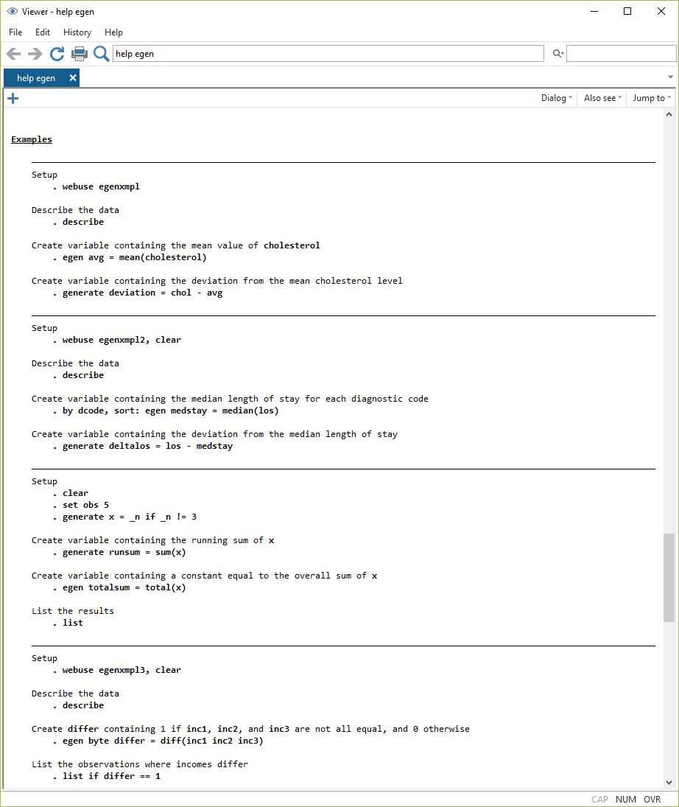

6 Variablen erstellen (2), Hilfe verwenden
6.1 egen
Mit egen, den “Extensions to generate,” stehen eine ganze Menge an Funktionen zur Verfügung. In Kapitel 4 hatten wir schon die Option cut zur Einteilung in Gruppen (cut) kennengelernt:
egen age_cat = cut(zpalter), at(15 18 35 60 100 ) label
tab age_cat | is not a valid command name
r(199);
(176 missing values generated)
age_cat | Freq. Percent Cum.
------------+-----------------------------------
15- | 10 0.05 0.05
18- | 3,351 16.89 16.94
35- | 13,855 69.85 86.79
60- | 2,620 13.21 100.00
------------+-----------------------------------
Total | 19,836 100.00Außerdem könnten wir bspw. eine Variable durchschnittsalter mit dem Mittelwert für zpalter erstellen:
egen durchschnittsalter = mean(zpalter)Oder wir könnten den Vergleich des Wohn- und Arbeitsbundeslandes aus Kapitel 5 mit diff() durchführen:
gen ao_wo = Bula == F233 if !missing(F233)
egen ao_wo2 = diff( Bula F233_Bula) if !missing(F233) Das führt zum gleichen Ergebnis, allerdings könnten wir in diff() noch weitere Variablen für einen Abgleich einfügen (bspw. weitere Arbeitsorte).
Eine Liste aller Optionen für egen findet sich unter help egen:

6.2 Erklärungen für help und Stata-Begriffe
6.2.1 numlist, varlist, varname
Eine numlist ist eine Liste von Zahlen, die je nach Anwendungsfall durch Leerzeichen oder Kommas getrennt sind. Es gibt eine ganze Reihe von Möglichkeiten, eine numlist zu erzeugen. Im cut-Beispiel oben haben wir einfach in at() direkt die Zahlen angegeben und so eine numlist mit den Werten 15 18 35 60 100 erstellt. Wir können aber mit (start(intervall)stop) auch eine Zahlenreihe anlegen, bspw. mit (0(2)8) die Zahlenreihe 0, 2, 4, 6, 8. Eine numlist kann auch einer Reihe und einem Wert bestehen: 0(1)5 8 führt zu 0, 1, 2, 3, 4, 5, 8. Mehr Tricks unter help numlist.
Eine varlist ist hingegen eine Liste an Variablennamen. Wenn wir eine solche aufrufen, werden die Namen mit den im Datensatz vorhandenen Variablen abgeglichen (und ggf. eine Fehlermeldung ausgegeben). Wir können varlisten einfach direkt angeben, bspw. wie in diff(bula F233), wir können aber auch Verallgemeinerungen, sog. ‘wild cards’ für die Auswahl von Variablen verwenden:
| v | l |
|---|---|
| myvar |
nur Variable myvar
|
| myvar* |
Variablen, deren Name mit myvar beginnt, alsp bspw. auch myvar2 oder myvariable
|
| *var |
Variablen, deren Name mit var endet, alsp bspw. auch yourvar
|
| my*var |
Variablen deren Name mit my beginnt und mit var endet - mit einer beliebigen Zahl an Zeichen dazwischen
|
| my?var |
Variablen deren Name mit my beginnt und mit var endet - mit nur einem Zeichen dazwischen
|
| myvar1-myvar6 | myvar1, myvar2, …, myvar6 (je nachdem, welche Variablen vorhanden sind - in der Reihenfolge aus dem Variablenexplorer) |
Weiteres unter help varlist
# steht in den Hilfe-Dateien immer für eine Zahl.
6.2.2 Beispielsyntax in den help Dateien
Ganz unten finden sich in den Hilfen immer Beispiele:

Diese beruhen auf Datensätzen, die lokal vorhanden sind (sysuse ...) oder direkt aus dem Internet geladen werden können (webuse). Oft ist es hilfreich, die Beispiele Schritt für Schritt durchlaufen zu lassen und im browse-Modus zu beobachten, was passiert.
6.3 by
Mit dem Präfix by können Berechnungen getrennt für verschiedene Gruppen durchgeführt werden.
Das ist insbesondere in Kombination mit egen ein sehr vielseitiges Werkzeug.
So können wir beispielsweise das Durchschnittsalter in unserem Datensatz getrennt für Frauen und Männer berechnen:
by S1: egen mean_byS1 = mean(zpalter)not sorted
r(5);
Allerdings setzt das immer voraus, dass der Datensatz nach den in by angegebenen Variablen sortiert ist - sonst bekommen wir eine Fehlermeldung.
Sortieren können wir entweder mit sort varname:
sort S1
by S1: egen mean_byS1 = mean(zpalter)…oder alles in einem Befehl:
bysort S1: egen mean_byS1 = mean(zpalter) | is not a valid command name
r(199);
+--------------------------------+
| S1 zpalter mean_byS1 |
|--------------------------------|
| männlic 41 46.49079 |
| weiblich 51 47.90402 |
| männlic 49 46.49079 |
| weiblich 63 47.90402 |
| weiblich 41 47.90402 |
+--------------------------------+Anmerkung für die Ausgabe der Fälle wurde nach
by S1,sort: egen mean_byS1 = mean(zpalter)mitsort intnrwieder die ursprüngliche Reihenfolge hergestellt.
Wir könnten
bysort S1 S3: egen mean_byS1S3 = mean(zpalter) | is not a valid command name
r(199);
+---------------------------------------------------------+
| S1 S3 zpalter mean_byS1 mean_byS1S3 |
|---------------------------------------------------------|
| männlic Abitur / 41 46.49079 46.49431 |
| weiblich Realschu 51 47.90402 48.09049 |
| männlic Fachhoch 49 46.49079 45.51706 |
| weiblich Abitur / 63 47.90402 46.71193 |
| weiblich Fachhoch 41 47.90402 46.8604 |
+---------------------------------------------------------+6.4 Übungen 6
- Laden Sie den BIBB/BAuA Erwerbstätigenbefragung 2018 (
BIBBBAuA_2018_suf1.dta).
6.4.1 Übungen 6-1
Bilden Sie mit Hilfe von
egenverschiedene Einkommensklassen (bspw. ab 0EUR in 500EUR-Schritten bis 72000EUR). Nutzen Sie dienumlist-Funktion mit(start(intervall)stop). Verändern Sie Labels.Welche Variablen bekommen Sie mit
describeangezeigt, wenn Sie entwederdescribe F21,describe F21*,describe F21?,describe F2*4oderdescribe F2?4verwenden?
6.4.2 Übungen 6-2
- Berechnen Sie das Durchschnittseinkommen (basierend auf
F518_SUF) getrennt für Männer und Frauen und legen Sie es in einer neuen Variablem_inc_byS1ab.
- mit
mvdecode F518_SUF, mv(99998/99999)können Sie die Missings ausschließen - Denken Sie daran, dass Sie die Daten sortieren müssen.
- Wie würden Sie jetzt für jede*n Befragten berechnen, um wieviel ihr*sein Einkommen vom geschlechtsspezifischen Durchschnittswert unterscheidet?
6.4.3 Bonusaufgabe
- Öffnen Sie die Hilfe für
egenund lassen Sie ein Beispiel Schritt für Schritt durchlaufen - beobachten Sie was passiert, indem Sie mitbrowseden Datensatz betrachten.
6.5 Anhang
6.5.1 Kombination von summarize mit dem by-Präfix
Mit bysort können wir auch Gruppenvergleiche erstellen. Bspw. können wir die Altersangaben für Männer (S1=1) und Frauen (S1=2) vergleichen, indem wir das Befehls-Präfix bys varX: verwenden. Stata sortiert also den Datensatz entsprechend der angegebenen Variable und die folgende Berechnung wird getrennt nach den Werten für varX ausgeführt. Wenn wir also summarize für beide Ausprägungen von S1 berechnen möchten, gehen wir wir folgt vor:
bysort S1: summarize zpalter | is not a valid command name
r(199);
--------------------------------------------------------------------------------
-> S1 = männlic
Variable | Obs Mean Std. Dev. Min Max
-------------+---------------------------------------------------------
zpalter | 9,990 46.49079 11.87744 16 87
--------------------------------------------------------------------------------
-> S1 = weiblich
Variable | Obs Mean Std. Dev. Min Max
-------------+---------------------------------------------------------
zpalter | 9,846 47.90402 10.71604 15 83In den neuen Bundesländern sind die Befragten im Schnitt also um 53.90083 - 50.66093 = 3.2399 Jahre älter.